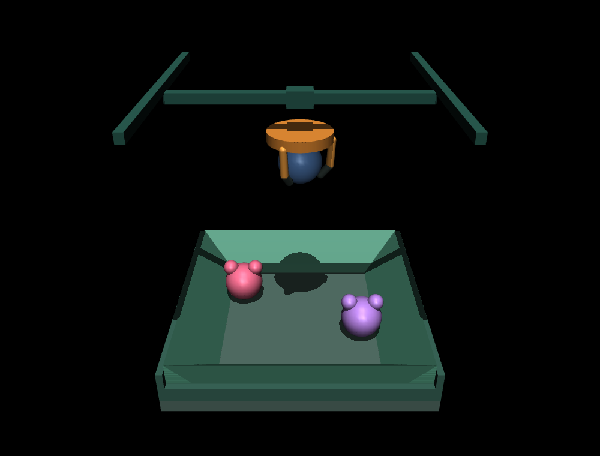

첫 플레이 버전의 범위
기계
40cm 상자 안에 XYZ 슬라이드 관절과 회전 관절 3개로 움직이는 집게를 구성한다. 정면 사선 카메라에서 집게와 배출구가 함께 보이게 한다.
집기 물리
50~100g의 단순 강체 인형을 사용한다. 집게 힘에 상한을 두고, 접촉과 마찰에 따라 인형이 들리거나 미끄러지게 한다.
조작
방향키로 조준하고 Enter로 자동 집기와 배출을 실행한다. Shift로 미세 조준하고 Tab 또는 1~5로 시점을 바꾼다.
MuJoCo는 관절과 접촉을 계산하고 Python은 입력과 동작 순서를 제어한다. Blender 외장·인형 모델, 줄감개 시뮬레이션, 봉제인형 변형은 첫 버전이 완성된 뒤 필요에 따라 추가한다.
한 판의 흐름
- 조준
- 버튼 누르기
- 집게 하강
- 닫기
- 상승
- 배출구로 이동
- 열기
- 다음 판 대기
3주 제작 일정 · 주 6시간, 총 18시간
1주차 · 모델과 조준
- 3시간 — MuJoCo 실행 환경을 준비하고 상자, XYZ 관절, 집게발을 모델링한다.
- 3시간 — 이동 한계와 키보드 입력을 연결한다. 집게를 인형 바로 위에 놓고 열고 닫는 시험을 시작한다.
완료 확인 — 방향키로 조준하고 집게를 열고 닫을 수 있다.
2주차 · 집기와 자동 배출 완료
- 3시간 — 집게발 모양, 닫힘 힘과 마찰을 조정해 100g 인형을 약 15cm 들어 올린다.
- 3시간 — 하강부터 배출까지 상태 전환을 연결하고, 빈 집게로도 한 판이 끝나는지 시험한다.
완료 확인 — 버튼 한 번으로 인형을 들어 배출구에 놓는다.
3주차 · 외형 구현 완료, 손님 테스트 대기
- 3시간 — 본체 기둥, 상단 커버와 하단 캐비닛을 만들어 기계 외형을 완성한다.
- 3시간 — 카메라와 미세 조준, 조작 안내를 다듬고 처음 보는 사람에게 플레이를 맡긴다.
완료 확인 — 처음 해보는 사람이 조준하고 한 판을 마친 뒤 다음 판을 시작한다.
1주차 결과 · 수동 조준과 자동 집기
- 프로토타입 — 40cm 상자, XYZ 이동, 3발 집게, 100g 시험 인형 세 개를 구현했다.
- 조작 — 방향키와 Shift로 화면 기준 이동과 미세 조준을 한다. Enter로 하강·집기·상승을 실행하고 Space로 인형을 놓는다. Tab 또는 1~5로 카메라를 바꾼다.
- 플레이 테스트 반영 — 바닥에 조준 위치를 표시했다. 구석에 떨어진 인형이 안쪽으로 돌아오도록 경사면을 넣고, 집게 패드의 마찰과 인형의 구름 저항을 높였다.
- 검증 — 세 인형을 각각 집어 옮긴 뒤 놓을 수 있었고, 네 구석에서 인형이 다시 집게 이동 범위로 돌아왔다. 다섯 카메라 시점에서 방향키가 화면 방향과 일치했다.

MuJoCo 정면 사선 시점에서 캡처한 파란 인형 집기 성공 장면.
2주차에는 집게가 들어 올린 인형을 배출구까지 옮겨 떨어뜨리는 동작을 연결한다.
2주차 결과 · 자동 배출 완료
- 한 판 진행 — 조준 후 Enter를 누르면 하강, 집기, 상승, 배출구 이동, 놓기가 자동으로 이어진다.
- 배출 구조 — 왼쪽 앞 상판에 낙하 구멍을 만들고 아래쪽에 회수함을 배치했다. 인형은 물리적으로 구멍을 통과해 회수함에 쌓인다.
- 진행 제어 — 자동 진행 중에는 수동 이동과 추가 뽑기 입력을 잠근다. 24초가 지나도 동작이 끝나지 않으면 정지하고 R 초기화를 안내한다.
- 연속 검증 — 최종 구조에서 초기화 없이 10판을 진행했다. 세 인형의 획득 3회와 빈 집게 실패 7회가 끝난 뒤 매번 조작이 돌아왔다. 획득 수, 아래 회수함 보관, 중복 입력, 초기화와 시간 초과 처리를 확인했다.
 실제 MuJoCo 시뮬레이션의 집기부터 아래 회수함 배출까지. 재생 속도는 약 1.15배이며 반복 재생된다.
실제 MuJoCo 시뮬레이션의 집기부터 아래 회수함 배출까지. 재생 속도는 약 1.15배이며 반복 재생된다.
집는 위치와 인형 자세에 따라 미끄러질 수 있다. 검증은 프로그램으로 지정한 조준 위치와 입력을 사용했다. 손님이 직접 플레이하는 테스트는 3주차에 진행한다.
3주차 결과 · 외형과 조작 안내 구현
- 기계 외형 — 크림색 기둥과 상단 프레임, 청록색 하단 캐비닛, 조이스틱과 뽑기 버튼을 배치했다. 상품 출구로 아래 회수함을 볼 수 있다.
- 집게와 인형 — 승강부와 집게를 잇는 줄을 표현하고, 인형에 눈과 입을 더했다. 배경과 조명을 조정해 기계의 전체 형태가 보이도록 했다.
- 조준과 안내 — 다섯 시점에서 화면 방향에 맞춰 조작한다. 위에서 볼 때 집게와 가로 빔을 숨겨 인형과 초록색 조준점을 볼 수 있다. 기본 조작은 화면 아래에 표시하고 H로 수동 조작 안내를 펼친다.
- 진행 상태 — 현재 동작과 획득 수를 표시한다. 세 인형을 모두 얻으면 R로 새 게임을 시작하도록 안내한다.
- 검증 — 새 외형을 적용한 상태에서 성공 3회와 실패 7회의 동작을 확인했다. 세 인형을 모두 획득한 뒤 초기화해 나머지 실패 시험을 진행했다. 다섯 카메라의 방향키 대응, 미세 조준, H 안내와 화면 렌더링을 확인했다.
 3주차 외형을 적용한 자동 집기와 배출. 실제 시뮬레이션을 약 1.15배 속도로 반복 재생한다.
3주차 외형을 적용한 자동 집기와 배출. 실제 시뮬레이션을 약 1.15배 속도로 반복 재생한다.
남은 확인은 처음 사용하는 손님의 플레이 테스트다. 아래 항목으로 직접 사용한 결과를 확인하면 3주차를 마감할 수 있다.
최종 확인
- 집기 — 가운데를 조준하면 100g 시험 인형을 들어 올릴 수 있고, 크게 빗나가면 빈 집게로 돌아온다.
- 연속 플레이 — 집기 성공과 실패를 섞어 10판을 진행한다. 진행 중 버튼을 다시 눌러도 두 판이 겹치지 않고, 각 판이 끝나면 조작이 돌아온다.
- 조작감 — 처음 보는 사람이 화면의 키 안내만 보고 조준하고 뽑는다. 집게 위치가 헷갈리면 카메라 각도를, 멈추기 어렵다면 저속 이동과 감속을 조정한다.
- 재실행 — MJCF 모델, Python 실행 코드, 의존성 목록과 실행·조작 안내를 남긴다. 창을 닫고 다시 실행해 한 판을 확인한다.
2주차 기능과 연속 플레이 검증을 완료했다. 3주차는 외형 마감 3시간과 조작감·플레이 테스트 3시간으로 진행한다. 게임패드 연결은 후속 작업으로 둔다.